JEE Main 2024 (Session 2), 6 Apr Shift 1: worked solutions for review
Questions and options are NTA’s own images; the green option is NTA’s final key. Every solution below was written by Claude
and checked against NTA’s final key. It is not NTA’s solution. Please mark anything unclear or wrong.
Q1 · Mathematics · MCQ · ID 68019114064
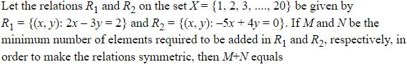
(1) 
(2) 
(3) 
(4) 
Hint 1: List the pairs in each relation first. For symmetry, every (x, y) needs its (y, x).
Hint 2: R1: 2x = 3y + 2 with y even. R2: 4y = 5x with x a multiple of 4. Check whether any reverse pair is already present.
What this tests: Symmetric relations
1. R1 = {(4,2), (7,4), (10,6), (13,8), (16,10), (19,12)}: 6 pairs, no reverse pair inside, so M = 6.
2. R2 = {(4,5), (8,10), (12,15), (16,20)}: N = 4.
3. M + N = 10.
Answer: (2)
If this felt hard: Revise Relations and Functions: making a relation symmetric.
Claude’s answer: 2 · NTA final key: 2 · agrees · Answer recomputed by script (tools/verify_pyq_solutions.py)
Q2 · Mathematics · MCQ · ID 68019114065
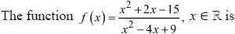
Hint 1: Check whether two inputs give the same output, and whether the range is all of R.
Hint 2: Numerator (x + 5)(x − 3); denominator x2 − 4x + 9 > 0 always. For the range, treat y = f(x) as a quadratic in x.
What this tests: One-one and onto for rational functions
1. f(−5) = f(3) = 0: not one-one.
2. y(x2 − 4x + 9) = x2 + 2x − 15 needs discriminant ≥ 0: 5y2 + 2y − 16 ≤ 0, a bounded interval. Not onto.
Answer: (4)
If this felt hard: Revise Relations and Functions (range by discriminant).
Claude’s answer: 4 · NTA final key: 4 · agrees · Answer recomputed with SymPy (tools/verify_pyq_solutions.py)
Q3 · Mathematics · MCQ · ID 68019114066
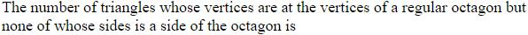
(2) 
(3) 
(4) 
Hint 1: Count triangles with no side of the octagon: avoid choosing two adjacent vertices.
Hint 2: Number of ways to choose 3 non-adjacent vertices of an n-gon = n(n − 4)(n − 5)/6.
What this tests: Counting triangles in a polygon
1. n = 8: 8 × 4 × 3/6 = 16.
2. (Check: 56 total − 8 with two sides − 32 with exactly one side = 16.)
Answer: (1)
If this felt hard: Revise Permutations and Combinations.
Claude’s answer: 1 · NTA final key: 1 · agrees · Answer recomputed by script (tools/verify_pyq_solutions.py)
Q4 · Mathematics · MCQ · ID 68019114067
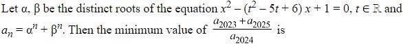
(4) 
Hint 1: Find a recurrence for an = αn + βn.
Hint 2: αβ = 1 and α + β = s, so an+1 = s an − an−1.
What this tests: Newton's sums / recurrence for power sums
1. a2025 + a2023 = s a2024, so the ratio is s = t2 − 5t + 6.
2. Its minimum is at t = 5/2: −1/4.
Answer: (1)
If this felt hard: Revise Quadratic Equations.
Claude’s answer: 1 · NTA final key: 1 · agrees · Answer recomputed with SymPy (tools/verify_pyq_solutions.py)
Note: At s = −1/4 the roots are complex but distinct, so the condition still holds.
Q5 · Mathematics · MCQ · ID 68019114068
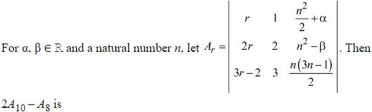
(1)
Hint 1: Split the first column into an r-part and a constant part.
Hint 2: The r-part has its first column proportional to the second column, so that determinant is 0: Ar does not depend on r.
What this tests: Properties of determinants
1. Column 1 = r(1, 2, 3) + (0, 0, −2); the r-part matches column 2, so it gives 0.
2. Ar = det[[0, 1, n2/2 + α],[0, 2, n2 − β],[−2, 3, n(3n − 1)/2]] = −2(n2 − β − n2 − 2α) = 4α + 2β.
3. 2A10 − A8 = 4α + 2β.
Answer: (4)
If this felt hard: Revise splitting a determinant column-wise.
Claude’s answer: 4 · NTA final key: 4 · agrees · Answer recomputed with SymPy (tools/verify_pyq_solutions.py)
Q6 · Mathematics · ID 68019114069
Left out of the bank: dropped (NTA).
Q7 · Mathematics · MCQ · ID 68019114070
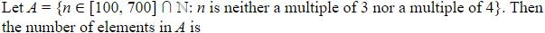
(3)
Hint 1: Count the complement: multiples of 3 or 4 between 100 and 700.
Hint 2: Inclusion–exclusion with multiples of 3, of 4 and of 12.
What this tests: Inclusion–exclusion
1. Total 601 numbers.
2. Multiples of 3: 200; of 4: 151; of 12: 50. Union = 301.
3. Neither = 601 − 301 = 300.
Answer: (3)
If this felt hard: Revise Sets.
Claude’s answer: 3 · NTA final key: 3 · agrees · Answer recomputed by script (tools/verify_pyq_solutions.py)
Q8 · Mathematics · MCQ · ID 68019114071
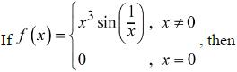
Hint 1: Differentiate twice for x ≠ 0 and substitute x = 2/π.
Hint 2: f'(x) = 3x2 sin(1/x) − x cos(1/x).
What this tests: Second derivative
1. f''(x) = 6x sin(1/x) − 4 cos(1/x) − sin(1/x)/x.
2. At x = 2/π: sin = 1, cos = 0: f'' = 12/π − π/2 = (24 − π2)/(2π).
3. (f''(0) does not exist, so options 1 and 3 fail.)
Answer: (2)
If this felt hard: Revise Continuity and Differentiability.
Claude’s answer: 2 · NTA final key: 2 · agrees · Answer recomputed with SymPy (tools/verify_pyq_solutions.py)
Q9 · Mathematics · MCQ · ID 68019114072
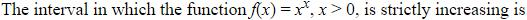
Hint 1: Use logarithmic differentiation.
Hint 2: f'(x) = xx(1 + ln x).
What this tests: Monotonicity
1. f' > 0 when ln x > −1, i.e. x > 1/e.
2. Strictly increasing on [1/e, ∞).
Answer: (1)
If this felt hard: Revise Application of Derivatives.
Claude’s answer: 1 · NTA final key: 1 · agrees · Answer recomputed with SymPy (tools/verify_pyq_solutions.py)
Q10 · Mathematics · MCQ · ID 68019114073
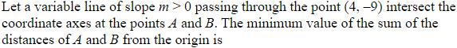
(1) 
(4)
Hint 1: Write both intercepts in terms of m, and remember m > 0.
Hint 2: Line: y + 9 = m(x − 4). OA = 4 + 9/m, OB = 9 + 4m.
What this tests: Straight lines and AM–GM
1. Sum = 13 + 9/m + 4m.
2. By AM–GM, 9/m + 4m ≥ 12 (at m = 3/2).
3. Minimum = 25.
Answer: (2)
If this felt hard: Revise intercepts and AM–GM.
Claude’s answer: 2 · NTA final key: 2 · agrees · Answer recomputed with SymPy (tools/verify_pyq_solutions.py)
Q11 · Mathematics · MCQ · ID 68019114074
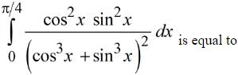
(1) 
(3) 
Hint 1: Divide numerator and denominator by cos6x.
Hint 2: Integrand becomes tan2x sec2x/(1 + tan3x)2; put t = tan x.
What this tests: Integration by substitution
1. ∫01 t2/(1 + t3)2 dt.
2. = [−1/(3(1 + t3))]01 = −1/6 + 1/3 = 1/6.
Answer: (2)
If this felt hard: Revise Integrals.
Claude’s answer: 2 · NTA final key: 2 · agrees · Answer recomputed with SymPy (tools/verify_pyq_solutions.py)
Q12 · Mathematics · MCQ · ID 68019114075
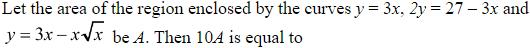
(3) 
Hint 1: Find the three intersection points first.
Hint 2: y = 3x and 2y = 27 − 3x meet at (3, 9); the curve y = 3x − x√x meets y = 3x at 0 and the line at (9, 0).
What this tests: Area bounded by curves
1. Area = ∫03 x3/2 dx + ∫39 [(27 − 3x)/2 − 3x + x3/2] dx.
2. = 18√3/5 + (81 − 162 + 97.2 − 18√3/5) = 16.2.
3. 10A = 162.
Answer: (2)
If this felt hard: Revise Application of Integrals.
Claude’s answer: 2 · NTA final key: 2 · agrees · Answer recomputed with SymPy (tools/verify_pyq_solutions.py)
Q13 · Mathematics · MCQ · ID 68019114076
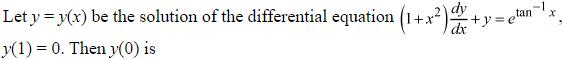
Hint 1: Linear DE: divide by 1 + x2.
Hint 2: IF = etan^{−1x}.
What this tests: Linear differential equations
1. y etan^{−1x} = ∫ e2tan^{−1x}/(1 + x2) dx = e2tan^{−1x}/2 + C.
2. y(1) = 0: C = −eπ/2/2.
3. y(0) = (1 − eπ/2)/2.
Answer: (3)
If this felt hard: Revise Differential Equations.
Claude’s answer: 3 · NTA final key: 3 · agrees · Answer recomputed with SymPy (tools/verify_pyq_solutions.py)
Q14 · Mathematics · MCQ · ID 68019114077
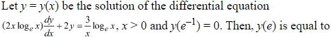
Hint 1: Divide by 2x ln x to get a linear DE.
Hint 2: y' + y/(x ln x) = 3/(2x2); IF = ln x.
What this tests: Linear differential equations
1. d(y ln x)/dx = (3/2) ln x/x2.
2. y ln x = −(3/2)(ln x + 1)/x + C; at x = e−1 both sides are 0, so C = 0.
3. y(e) = −(3/2)(2)/e = −3/e.
Answer: (2)
If this felt hard: Revise integration by parts.
Claude’s answer: 2 · NTA final key: 2 · agrees · Answer recomputed with SymPy (tools/verify_pyq_solutions.py)
Q15 · Mathematics · MCQ · ID 68019114078
(1)
(2)
(3)
(4)
Hint 1: Inradius of an equilateral triangle = side/(2√3).
Hint 2: The square's diagonal is the circle's diameter.
What this tests: Incircle and inscribed square
1. r = 2√3, diameter 4√3.
2. Square side 2√6: m = 24, n = 8√6, n2 = 384.
3. m + n2 = 408.
Answer: (1)
If this felt hard: Revise basic geometry.
Claude’s answer: 1 · NTA final key: 1 · agrees · Answer recomputed by script (tools/verify_pyq_solutions.py)
Q16 · Mathematics · ID 68019114079
Left out of the bank: dropped (NTA).
Q17 · Mathematics · MCQ · ID 68019114080
(1)
(2)
(3)
(4)
Hint 1: SD = |(b − a)·(d1 × d2)|/|d1 × d2|.
Hint 2: d1 × d2 = (16, 16, 16).
What this tests: Shortest distance between skew lines
1. b − a = (−4, 16, 0).
2. SD = |−4 + 16 + 0|/√3 = 12/√3 = 4√3.
Answer: (3)
If this felt hard: Revise Three Dimensional Geometry.
Claude’s answer: 3 · NTA final key: 3 · agrees · Answer recomputed with SymPy (tools/verify_pyq_solutions.py)
Q18 · Mathematics · MCQ · ID 68019114081
(1)
(2)
(3)
(4)
Hint 1: Recover Σx and Σx2, correct them, then recompute.
Hint 2: Σx = 200, Σx2 = 20(4 + 100) = 2080.
What this tests: Correcting mean and variance
1. Corrected Σx = 204, Σx2 = 2080 − 64 + 144 = 2160.
2. Mean 10.2; variance = 108 − 104.04 = 3.96.
3. SD = √3.96.
Answer: (2)
If this felt hard: Revise Statistics.
Claude’s answer: 2 · NTA final key: 2 · agrees · Answer recomputed by script (tools/verify_pyq_solutions.py)
Q19 · Mathematics · MCQ · ID 68019114082
(1)
(2)
(3)
(4)
Hint 1: For a plane quadrilateral, area = (1/2)|AC × BD|.
Hint 2: AC = (−1, 1, 2), BD = (5/3, −5/3, −2/3).
What this tests: Vector area
1. AC × BD = (8/3, 8/3, 0), magnitude 8√2/3.
2. Area = 4√2/3.
Answer: (4)
If this felt hard: Revise Vector Algebra.
Claude’s answer: 4 · NTA final key: 4 · agrees · Answer recomputed with SymPy (tools/verify_pyq_solutions.py)
Note: The points are coplanar (checked).
Q20 · Mathematics · MCQ · ID 68019114083
(1)
(2) 
(3)
(4)
Hint 1: Bayes' theorem.
Hint 2: P(B | standard) = 0.4 × 0.9/(0.6 × 0.8 + 0.4 × 0.9).
What this tests: Bayes' theorem
1. p = 0.36/0.84 = 3/7.
2. 126p = 54.
Answer: (4)
If this felt hard: Revise Probability.
Claude’s answer: 4 · NTA final key: 4 · agrees · Answer recomputed by script (tools/verify_pyq_solutions.py)
Q21 · Mathematics · Numerical · ID 68019114084
Hint 1: 4 + x2 = (2i − x)(−2i − x). Use the polynomial's value at ±2i.
Hint 2: Π(4 + xi2) = P(2i)P(−2i)/16 = |P(2i)|2/16.
What this tests: Roots of polynomials and complex numbers
1. P(2i) = 64 − 64i + 68 − 24i + 9 = 141 − 88i.
2. |P(2i)|2 = 19881 + 7744 = 27625.
3. 27625/16 = 125m/16 gives m = 221.
Answer: 221
If this felt hard: Revise Quadratic and polynomial equations.
Claude’s answer: 221 · NTA final key: 221 · agrees · Answer recomputed with SymPy (tools/verify_pyq_solutions.py)
Q22 · Mathematics · Numerical · ID 68019114085
Hint 1: A non-trivial combination giving zero means the three vectors are dependent.
Hint 2: det[[α, 1, 2],[1, β, 2],[2, 3, γ]] = 0.
What this tests: Linear dependence and determinants
1. det = αβγ − 6α − 4β − γ + 10 = 0.
2. With αβγ = 45: 6α + 4β + γ = 55.
Answer: 55
If this felt hard: Revise Determinants.
Claude’s answer: 55 · NTA final key: 55 · agrees · Answer recomputed with SymPy (tools/verify_pyq_solutions.py)
Q23 · Mathematics · Numerical · ID 68019114086
Hint 1: Divide consecutive terms.
Hint 2: T3/T2 = ((n − 1)/2)(y/x) = 2/9 and T4/T3 = ((n − 2)/3)(y/x) = 1/9.
What this tests: Binomial terms ratio
1. Dividing: 3(n − 1) = 4(n − 2), so n = 5, y/x = 1/9.
2. 5x4y = 135 gives x5 = 243, x = 3, y = 1/3.
3. 6(125 + 9 + 1/3) = 806.
Answer: 806
If this felt hard: Revise Binomial Theorem.
Claude’s answer: 806 · NTA final key: 806 · agrees · Answer recomputed with SymPy (tools/verify_pyq_solutions.py)
Q24 · Mathematics · Numerical · ID 68019114087
Hint 1: Find Tr in closed form: try A·3r + B·6r.
Hint 2: B = 2 and T1 = 6 gives A = −2: Tr = 2·6r − 2·3r.
What this tests: Recurrence relations and GP sums
1. Sum = (12/5)(6n − 1) − 3(3n − 1) = (3/5)(4·6n − 5·3n + 1).
2. So n2 − 12n + 39 = 3, (n − 6)2 = 0, n = 6.
Answer: 6
If this felt hard: Revise Sequences and Series.
Claude’s answer: 6 · NTA final key: 6 · agrees · Answer recomputed with SymPy (tools/verify_pyq_solutions.py)
Q25 · Mathematics · Numerical · ID 68019114088
Hint 1: Find a relation between Ik and Ik+1 by integration by parts.
Hint 2: Ik+1 = 7(k + 1)(Ik − Ik+1).
What this tests: Reduction formulas
1. rk = Ik/Ik+1 = (7k + 8)/(7k + 7), so rk − 1 = 1/(7(k + 1)).
2. 1/(7(rk − 1)) = k + 1.
3. Σk=110(k + 1) = 65.
Answer: 65
If this felt hard: Revise Integrals (integration by parts).
Claude’s answer: 65 · NTA final key: 65 · agrees · Answer recomputed with SymPy (tools/verify_pyq_solutions.py)
Q26 · Mathematics · Numerical · ID 68019114089
Hint 1: First find the slopes of the two tangents from P(0, 1).
Hint 2: Put y = mx + 1 into the parabola: 9x2 + (12 + 18m)x + 4 = 0; tangency gives m = 0 or −4/3.
What this tests: Tangents to a parabola; angle bisectors
1. Tangent lines: slopes 0 and −4/3.
2. PQR isosceles with apex P: QR is perpendicular to an angle bisector at P.
3. Bisectors have slopes 2 and −1/2, so QR has slope −1/2 or 2.
4. 16(1/4 + 4) = 68.
Answer: 68
If this felt hard: Revise Conic Sections and Straight Lines.
Claude’s answer: 68 · NTA final key: 68 · agrees · Answer recomputed with SymPy (tools/verify_pyq_solutions.py)
Q27 · Mathematics · Numerical · ID 68019114090
Hint 1: Turn the condition into a differential equation for the conic.
Hint 2: dy/dx = (y + 5)/(2(x − 3)).
What this tests: Differential equation of a curve; parabola
1. Separating: (y + 5)2 = c(x − 3); (4, −2) gives c = 9.
2. Parabola with vertex (3, −5), a = 9/4.
3. Focal distance of (7, 1) = (x − 3) + a = 4 + 9/4 = 25/4.
4. 12d = 75.
Answer: 75
If this felt hard: Revise focal distance in Conic Sections.
Claude’s answer: 75 · NTA final key: 75 · agrees · Answer recomputed with SymPy (tools/verify_pyq_solutions.py)
Q28 · Mathematics · Numerical · ID 68019114091
Hint 1: Find the foot Q first.
Hint 2: Line through (2, −5, 11) with direction (2, −3, 4).
What this tests: Foot of perpendicular in 3D
1. Q = (2, −5, 11) + t(2, −3, 4) with t = −2: Q = (−2, 1, 3).
2. PQ = |(12, −3, −4)| = 13.
Answer: 13
If this felt hard: Revise Three Dimensional Geometry.
Claude’s answer: 13 · NTA final key: 13 · agrees · Answer recomputed with SymPy (tools/verify_pyq_solutions.py)
Q29 · Mathematics · Numerical · ID 68019114092
Hint 1: Expand: a × b + (a + b) × c = (1, 8, 13).
Hint 2: a × b = (−1, 22, 17), so (a + b) × c = (2, −14, −4) with a + b = (5, 1, −1).
What this tests: Vector equations
1. c = λ(a + b) + (w × (a + b))/27 with w = (2, −14, −4): c = λ(5, 1, −1) + (2/3, −2/3, 8/3).
2. a·c = 3λ + 14 = 13, so λ = −1/3.
3. b·c = 24λ − 14 = −22.
4. 24 − b·c = 46.
Answer: 46
If this felt hard: Revise Vector Algebra.
Claude’s answer: 46 · NTA final key: 46 · agrees · Answer recomputed with SymPy (tools/verify_pyq_solutions.py)
Q30 · Mathematics · Numerical · ID 68019114093
Hint 1: cot−1k = tan−1(1/k). Add them in pairs.
Hint 2: tan−1(1/3) + tan−1(1/4) + tan−1(1/5) = tan−1(23/24).
What this tests: Inverse trigonometric sums
1. Need tan−1(1/n) = π/4 − tan−1(23/24).
2. 1/n = (1 − 23/24)/(1 + 23/24) = 1/47.
3. n = 47.
Answer: 47
If this felt hard: Revise Inverse Trigonometric Functions.
Claude’s answer: 47 · NTA final key: 47 · agrees · Answer recomputed with SymPy (tools/verify_pyq_solutions.py)
Q31 · Physics · MCQ · ID 68019114094
(1)
(2)
(3)
(4)
Hint 1: Same momentum: write KE in terms of p.
Hint 2: KE = p2/(2m).
What this tests: Kinetic energy and momentum
1. With p fixed, KE is largest for the smallest mass.
2. A (mass m/2).
Answer: (1)
If this felt hard: Revise Work, Energy and Power.
Claude’s answer: 1 · NTA final key: 1 · agrees · Answer recomputed by script (tools/verify_pyq_solutions.py)
Q32 · Physics · MCQ · ID 68019114095
(1)
(2)
(3)
(4)
Hint 1: Atwood machine: a = (m2 − m1)g/(m1 + m2).
Hint 2: With r = m1/m2: (1 − r)/(1 + r) = 1/√2.
What this tests: Atwood machine
1. √2(1 − r) = 1 + r.
2. r = (√2 − 1)/(√2 + 1).
Answer: (1)
If this felt hard: Revise Laws of Motion.
Claude’s answer: 1 · NTA final key: 1 · agrees · Answer recomputed with SymPy (tools/verify_pyq_solutions.py)
Q33 · Physics · MCQ · ID 68019114096
(1)
(2)
(3)
(4)
Hint 1: To reach infinity, KE must cancel the (negative) potential energy at the surface.
Hint 2: KE = GMm/RE, and GM = gRE2.
What this tests: Escape energy
1. KE = GMm/RE = mgRE.
Answer: (4)
If this felt hard: Revise Gravitation.
Claude’s answer: 4 · NTA final key: 4 · agrees · Theory question: not computable, needs a teacher’s review
Q34 · Physics · MCQ · ID 68019114097
(1) 
(2) 
(3)
(4) 
Hint 1: Average speed = total distance/total time.
Hint 2: Distance in the first part = (80/2)t.
What this tests: Average speed
1. Distance = 40t + 240t = 280t.
2. Time = 4t; average = 70 km/h.
Answer: (1)
If this felt hard: Revise Motion in a Straight Line.
Claude’s answer: 1 · NTA final key: 1 · agrees · Answer recomputed by script (tools/verify_pyq_solutions.py)
Q35 · Physics · MCQ · ID 68019114098
(1)
(2)
(3)
(4)
Hint 1: At terminal velocity the net force is zero. Which forces act?
Hint 2: mg = buoyancy + viscous force; buoyancy = mgρ0/ρ.
What this tests: Terminal velocity
1. Viscous force = mg − mgρ0/ρ = mg(1 − ρ0/ρ).
Answer: (1)
If this felt hard: Revise Mechanical Properties of Fluids.
Claude’s answer: 1 · NTA final key: 1 · agrees · Theory question: not computable, needs a teacher’s review
Q36 · Physics · MCQ · ID 68019114099
(1)
(2)
(3)
(4)
Hint 1: CP − CV = P(∂V/∂T)P when U depends only on T.
Hint 2: From PV2 = RT: 2PV dV = R dT at constant P.
What this tests: Heat capacities
1. (∂V/∂T)P = R/(2PV).
2. CP = CV + R/(2V).
Answer: (1)
If this felt hard: Revise Thermodynamics.
Claude’s answer: 1 · NTA final key: 1 · agrees · Answer recomputed with SymPy (tools/verify_pyq_solutions.py)
Note: Treats U as depending on T only (as the options assume).
Q37 · Physics · MCQ · ID 68019114100
(1)
(2)
(3)
(4)
Hint 1: In a mixture both gases are at the same temperature.
Hint 2: vrms ∝ 1/√M.
What this tests: RMS speed
1. vHe/vO2 = √(32/4) = 2√2.
Answer: (1)
If this felt hard: Revise Kinetic Theory.
Claude’s answer: 1 · NTA final key: 1 · agrees · Answer recomputed by script (tools/verify_pyq_solutions.py)
Q38 · Physics · MCQ · ID 68019114101
(1)
(2)
(3)
(4)
Hint 1: Use Gauss's law for a sphere just outside the shell.
Hint 2: E = Q/(4πε0R2) with Q = 4πR2σ.
What this tests: Field of a charged spherical shell
1. E = σ/ε0 at the surface (taken as just outside).
Answer: (1)
If this felt hard: Revise Electric Charges and Fields.
Claude’s answer: 1 · NTA final key: 1 · agrees · Theory question: not computable, needs a teacher’s review
Note: Teacher look: exactly on the surface the field is sometimes taken as σ/(2ε_{0}) (average of inside and outside); NTA's key uses σ/ε_{0}.
Q39 · Physics · MCQ · ID 68019114102
(1) 
(2) 
(3) 
(4) 
Hint 1: v = c/√(μrεr).
Hint 2: √(2εr) = 3 × 108/1.5 × 108 = 2.
What this tests: Speed of EM waves in a medium
1. 2εr = 4.
2. εr = 2.
Answer: (2)
If this felt hard: Revise Electromagnetic Waves.
Claude’s answer: 2 · NTA final key: 2 · agrees · Answer recomputed by script (tools/verify_pyq_solutions.py)
Q40 · Physics · MCQ · ID 68019114103
(1)
(2)
(3)
(4)
Hint 1: B and D at the same potential means a balanced Wheatstone bridge. First reduce each arm to one resistance.
Hint 2: AB: 24 Ω in parallel with (12 + 12) Ω. BC: 1 ∥ 1. AD: x in series with (12 ∥ 12). DC: 0.5 Ω.
What this tests: Wheatstone bridge
1. RAB = 24 ∥ 24 = 12 Ω; RBC = 0.5 Ω; RAD = x + 6; RDC = 0.5 Ω.
2. Balance: RAB/RBC = RAD/RDC, so 12 = x + 6.
3. x = 6 Ω.
Answer: (2)
If this felt hard: Revise Current Electricity: reduce each arm before applying the balance condition.
Claude’s answer: 2 · NTA final key: 2 · agrees · Answer recomputed by script (tools/verify_pyq_solutions.py)
Note: Figure reading: 24 Ω parallel to two 12 Ω in series on AB; two 1 Ω in parallel on BC; x in series with two parallel 12 Ω on AD.
Q41 · Physics · MCQ · ID 68019114104
(1) 
(2)
(3)
(4)
Hint 1: Reading = MSR + CSR × least count.
Hint 2: LC = 1 mm/100 = 0.01 mm.
What this tests: Screw gauge
1. d = 1 + 42 × 0.01 = 1.42 mm = 71/50 mm.
2. x = 71.
Answer: (3)
If this felt hard: Revise Units and Measurements.
Claude’s answer: 3 · NTA final key: 3 · agrees · Answer recomputed by script (tools/verify_pyq_solutions.py)
Note: No zero error given.
Q42 · Physics · MCQ · ID 68019114105
(1) 
(2)
(3) 
(4) 
Hint 1: Write each quantity's SI unit and turn it into dimensions.
Hint 2: Torque: N m; B: N/(A m); magnetic moment: A m2; μ0: N/A2.
What this tests: Dimensions of electromagnetic quantities
1. A → IV (ML2T−2).
2. B → III (MT−2A−1).
3. C → II (L2A).
4. D → I (MLT−2A−2).
Answer: (3)
If this felt hard: Revise Units and Measurements.
Claude’s answer: 3 · NTA final key: 3 · agrees · Theory question: not computable, needs a teacher’s review
Q43 · Physics · MCQ · ID 68019114106
(1)
(2)
(3)
(4)
Hint 1: Biot–Savart for a short element; the point is perpendicular to it.
Hint 2: dB = (μ0/4π) I dl/r2.
What this tests: Biot–Savart law
1. dB = 10−7 × 10 × 0.01/0.25 = 4 × 10−8 T.
Answer: (1)
If this felt hard: Revise Moving Charges and Magnetism.
Claude’s answer: 1 · NTA final key: 1 · agrees · Answer recomputed by script (tools/verify_pyq_solutions.py)
Q44 · Physics · MCQ · ID 68019114107
(1) 
(2) 
(3)
(4)
Hint 1: Compare Z with R.
Hint 2: Z = √(R2 + (XL − XC)2) ≥ R, minimum at resonance.
What this tests: Series LCR resonance
1. At resonance Z = R is least, so current is maximum. I true.
2. Z ≥ R, so V/R ≥ V/Z. II true (same R).
Answer: (1)
If this felt hard: Revise Alternating Current.
Claude’s answer: 1 · NTA final key: 1 · agrees · Theory question: not computable, needs a teacher’s review
Q45 · Physics · MCQ · ID 68019114108
(1)
(2)
(3)
(4)
Hint 1: T = 2π√(m/k), so k = 4π2m/T2.
Hint 2: Δk/k = Δm/m − 2ΔT/T.
What this tests: Error propagation
1. Δk/k = (−1%) − 2(+2%) = −5%.
2. Error magnitude 5%.
Answer: (2)
If this felt hard: Revise Units and Measurements.
Claude’s answer: 2 · NTA final key: 2 · agrees · Answer recomputed by script (tools/verify_pyq_solutions.py)
Q46 · Physics · MCQ · ID 68019114109
(1) 
(2)
(3)
(4)
Hint 1: Which phenomenon needs photons?
Hint 2: The photoelectric effect is explained by the particle nature.
What this tests: Wave vs particle nature of light
1. Reflection, diffraction, interference, polarisation: wave nature.
2. Photoelectric effect: not explained by waves.
Answer: (3)
If this felt hard: Revise Dual Nature of Radiation and Matter.
Claude’s answer: 3 · NTA final key: 3 · agrees · Theory question: not computable, needs a teacher’s review
Q47 · Physics · MCQ · ID 68019114110
(1)
(2)
(3)
(4)
Hint 1: Einstein's equation: KEmax = hν − φ.
Hint 2: KEmax = eV0 = 0.5 eV.
What this tests: Photoelectric equation
1. φ = 2.48 − 0.5 = 1.98 eV.
Answer: (1)
If this felt hard: Revise Dual Nature.
Claude’s answer: 1 · NTA final key: 1 · agrees · Answer recomputed by script (tools/verify_pyq_solutions.py)
Q48 · Physics · MCQ · ID 68019114111
(1) 
(2) 
(3) 
(4)
Hint 1: Shortest wavelength = series limit (n2 → ∞).
Hint 2: Balmer: 1/λ = R/4; Lyman: 1/λ = R.
What this tests: Hydrogen spectrum
1. λB/λL = 4/1.
Answer: (4)
If this felt hard: Revise Atoms.
Claude’s answer: 4 · NTA final key: 4 · agrees · Answer recomputed by script (tools/verify_pyq_solutions.py)
Q49 · Physics · MCQ · ID 68019114112
(1)
(2)
(3)
(4)
Hint 1: Write Y from the gates: one input of the OR is NOT A, the other is A AND B.
Hint 2: Y = Ā + AB = Ā + B.
What this tests: Logic circuits
1. Y = Ā + B: 00 → 1, 01 → 1, 10 → 0, 11 → 1.
Answer: (2)
If this felt hard: Revise Semiconductor Electronics.
Claude’s answer: 2 · NTA final key: 2 · agrees · Theory question: not computable, needs a teacher’s review
Q50 · Physics · MCQ · ID 68019114113
(1)
(2)
(3)
(4)
Hint 1: KE ∝ v2.
Hint 2: Fraction left = (40/100)2.
What this tests: Kinetic energy
1. Fraction left 0.16, so 84% lost.
Answer: (2)
If this felt hard: Revise Work, Energy and Power.
Claude’s answer: 2 · NTA final key: 2 · agrees · Answer recomputed by script (tools/verify_pyq_solutions.py)
Q51 · Physics · Numerical · ID 68019114114
Hint 1: δm = A. Use the prism formula.
Hint 2: μ = sin((A + δm)/2)/sin(A/2) = sin A/sin(A/2) = 2cos(A/2).
What this tests: Prism and minimum deviation
1. 2cos(A/2) = √3.
2. A/2 = 30°, A = 60°.
Answer: 60
If this felt hard: Revise Ray Optics.
Claude’s answer: 60 · NTA final key: 60 · agrees · Answer recomputed with SymPy (tools/verify_pyq_solutions.py)
Q52 · Physics · Numerical · ID 68019114115
Hint 1: vmax = Aω.
Hint 2: ω = 2π/3.14 = 2 rad/s.
What this tests: SHM
1. vmax = 0.06 × 2 = 0.12 m/s = 12 cm/s.
Answer: 12
If this felt hard: Revise Oscillations.
Claude’s answer: 12 · NTA final key: 12 · agrees · Answer recomputed by script (tools/verify_pyq_solutions.py)
Q53 · Physics · Numerical · ID 68019114116
Hint 1: A·(B × C) = 0 is the determinant of the three vectors.
Hint 2: det[[−x, −6, −2],[−1, 4, 3],[−8, −1, 3]] = 0.
What this tests: Scalar triple product
1. det = −15x + 126 − 66 = −15x + 60.
2. x = 4.
Answer: 4
If this felt hard: Revise Vector Algebra.
Claude’s answer: 4 · NTA final key: 4 · agrees · Answer recomputed with SymPy (tools/verify_pyq_solutions.py)
Q54 · Physics · Numerical · ID 68019114117
Hint 1: Volume is conserved: R3 = 1000r3.
Hint 2: R = 10r; surface energy ∝ total area.
What this tests: Surface energy
1. Area of droplets: 1000 × 4πr2; big drop: 4π(10r)2 = 400πr2.
2. Ratio 10 = 10/x, x = 1.
Answer: 1
If this felt hard: Revise Mechanical Properties of Fluids.
Claude’s answer: 1 · NTA final key: 1 · agrees · Answer recomputed by script (tools/verify_pyq_solutions.py)
Q55 · Physics · Numerical · ID 68019114118
Hint 1: DC gives the coil's resistance. Then use Z and the rms current.
Hint 2: R = 100/5 = 20 Ω; Z = √(202 + (20√3)2) = 40 Ω.
What this tests: Power in AC circuits
1. Irms = (200/√2)/40.
2. P = Irms2R = (20000/1600) × 20 = 250 W.
Answer: 250
If this felt hard: Revise Alternating Current.
Claude’s answer: 250 · NTA final key: 250 · agrees · Answer recomputed by script (tools/verify_pyq_solutions.py)
Q56 · Physics · Numerical · ID 68019114119
Hint 1: No external torque: angular momentum is conserved.
Hint 2: I ∝ R2, so T ∝ R2.
What this tests: Conservation of angular momentum
1. T' = 24 × (3/4)2 = 13.5 h = 13 h 30 min.
Answer: 13
If this felt hard: Revise Rotational Motion.
Claude’s answer: 13 · NTA final key: 13 · agrees · Answer recomputed by script (tools/verify_pyq_solutions.py)
Q57 · Physics · Numerical · ID 68019114120
Hint 1: W = MB(cos θ1 − cos θ2).
Hint 2: M = NIA.
What this tests: Work on a magnetic dipole
1. M = 200 × 100 × 10−6 × 2.5 × 10−4 = 5 × 10−6 A m2.
2. W = MB(1 − 0) = 5 μJ.
Answer: 5
If this felt hard: Revise Magnetism.
Claude’s answer: 5 · NTA final key: 5 · agrees · Answer recomputed by script (tools/verify_pyq_solutions.py)
Q58 · Physics · Numerical · ID 68019114121
Hint 1: Volume stays the same when the wire is stretched.
Hint 2: A → A/4 so L → 4L.
What this tests: Resistance on stretching
1. R' = ρ(4L)/(A/4) = 16R.
Answer: 16
If this felt hard: Revise Current Electricity.
Claude’s answer: 16 · NTA final key: 16 · agrees · Answer recomputed by script (tools/verify_pyq_solutions.py)
Q59 · Physics · Numerical · ID 68019114122
Hint 1: Each sheet gives σ/(2ε0), pointing away from positive and towards negative sheets.
Hint 2: P lies between x = a and x = 3a.
What this tests: Field of infinite sheets
1. From −σ at −a: σ/(2ε0) towards −x.
2. From −2σ at a: σ/ε0 towards −x.
3. From σ at 3a: σ/(2ε0) towards −x.
4. Total 2σ/ε0: x = 2.
Answer: 2
If this felt hard: Revise Electric Charges and Fields.
Claude’s answer: 2 · NTA final key: 2 · agrees · Answer recomputed by script (tools/verify_pyq_solutions.py)
Q60 · Physics · Numerical · ID 68019114123
Hint 1: rn = n2a0.
Hint 2: 8.48/0.529 ≈ 16, so n = 4.
What this tests: Bohr model
1. n = 4.
2. En = E/n2 = E/16.
Answer: 16
If this felt hard: Revise Atoms.
Claude’s answer: 16 · NTA final key: 16 · agrees · Answer recomputed by script (tools/verify_pyq_solutions.py)
Q61 · Chemistry · MCQ · ID 68019114124
(1)
(2)
(3)
(4)
Hint 1: Take 1 L of solution and split its mass into solute and water.
Hint 2: Mass of solution 1120 g; NaOH 40x g; water 1120 − 40x g.
What this tests: Molarity and molality
1. Molality = x/((1120 − 40x)/1000) = 3.
2. 1000x = 3360 − 120x, so x = 3.
Answer: (3)
If this felt hard: Revise Solutions.
Claude’s answer: 3 · NTA final key: 3 · agrees · Answer recomputed with SymPy (tools/verify_pyq_solutions.py)
Q62 · Chemistry · MCQ · ID 68019114125
(1)
(2) 
(3)
(4)
Hint 1: Count unpaired electrons and VSEPR pairs.
Hint 2: NO has 11 valence electrons (odd). NO2− has 18 (even).
What this tests: Shapes and magnetism
1. SO2Cl2: tetrahedral (III).
2. NO: paramagnetic (I).
3. NO2−: diamagnetic (II).
4. I3−: linear (IV).
Answer: (2)
If this felt hard: Revise Chemical Bonding.
Claude’s answer: 2 · NTA final key: 2 · agrees · Theory question: not computable, needs a teacher’s review
Q63 · Chemistry · MCQ · ID 68019114126
(1) 
(2) 
(3)
(4) 
Hint 1: Equal numbers of molecules means equal partial pressures.
Hint 2: Kp = pHI2/(pH2pI2).
What this tests: Equilibrium constant
1. All partial pressures equal p: Kp = p2/p2 = 1.
2. 1 = 10 × 10−1: x = 10.
Answer: (2)
If this felt hard: Revise Equilibrium (Δng = 0).
Claude’s answer: 2 · NTA final key: 2 · agrees · Answer recomputed by script (tools/verify_pyq_solutions.py)
Note: The data (−20 °C, R) are not needed.
Q64 · Chemistry · MCQ · ID 68019114127
(1)
(2)
(3)
(4)
Hint 1: Which of these conducts like a metal?
Hint 2: Graphite conducts well along its layers (delocalised electrons).
What this tests: Conductors and semiconductors
1. Ge and Si are semiconductors; copper oxide is a semiconductor.
2. Graphite is a conductor.
Answer: (2)
If this felt hard: Revise Semiconductor Electronics / solid properties.
Claude’s answer: 2 · NTA final key: 2 · agrees · Theory question: not computable, needs a teacher’s review
Q65 · Chemistry · MCQ · ID 68019114128
(1)
(2)
(3)
(4)
Hint 1: What happens to molar conductivity when a solution is already at infinite dilution?
Hint 2: Λm approaches Λ0 and stops changing with dilution.
What this tests: Molar conductivity
1. At infinite dilution Λm = Λ0, so more water does not change it (and very dilute conductance is hard to measure).
Answer: (3)
If this felt hard: Revise Electrochemistry.
Claude’s answer: 3 · NTA final key: 3 · agrees · Theory question: not computable, needs a teacher’s review
Q66 · Chemistry · MCQ · ID 68019114129
(1)
(2)
(3) 
(4)
Hint 1: Read 'electron affinity value negative' as the electron gain enthalpy being negative, i.e. energy released.
Hint 2: Electron gain enthalpy is negative (exothermic) for Na and Al, positive for Be, N and O → O2−.
What this tests: Electron gain enthalpy
1. Be, N: positive electron gain enthalpy (stable configurations).
2. O → O2−: overall positive.
3. Na, Al: negative (energy released).
4. D and E only.
Answer: (2)
If this felt hard: Revise Classification of Elements and Periodicity.
Claude’s answer: 2 · NTA final key: 2 · agrees · Theory question: not computable, needs a teacher’s review
Note: Teacher look: NTA uses 'electron affinity value' with the sign of Δ_{eg}H. With the textbook sign of electron affinity (energy released = positive) the answer would be A, B and C.
Q67 · Chemistry · MCQ · ID 68019114130
(1)
(2) 
(3) 
(4) 
Hint 1: What is gallium's melting point?
Hint 2: Ga melts at about 303 K and boils near 2500 K.
What this tests: Uses of gallium
1. Ga is used in high-temperature thermometers. I true.
2. At 256 K gallium is solid, so it cannot measure that. II false.
Answer: (3)
If this felt hard: Revise The p-Block Elements.
Claude’s answer: 3 · NTA final key: 3 · agrees · Theory question: not computable, needs a teacher’s review
Q68 · Chemistry · MCQ · ID 68019114131
(1) 
(2) 
(3) 
(4) 
Hint 1: Count bond pairs and lone pairs on the central atom.
Hint 2: SF4: 4 + 1; BrF3: 3 + 2; BrO3−: 3 + 1; NH4+: 4 + 0.
What this tests: VSEPR
1. SF4: see-saw (III). BrF3: bent T (IV). BrO3−: pyramidal (II). NH4+: tetrahedral (I).
Answer: (3)
If this felt hard: Revise Chemical Bonding.
Claude’s answer: 3 · NTA final key: 3 · agrees · Theory question: not computable, needs a teacher’s review
Q69 · Chemistry · MCQ · ID 68019114132
(1) 
(2) 
(3) 
(4) 
Hint 1: Lanthanoids are Ce to Lu (Z = 58–71).
Hint 2: Cm (curium, Z = 96) is an actinoid.
What this tests: f-block classification
1. Eu, Er, Tb, Yb, Lu are lanthanoids.
2. Only Cm is not.
Answer: (2)
If this felt hard: Revise The d- and f-Block Elements.
Claude’s answer: 2 · NTA final key: 2 · agrees · Theory question: not computable, needs a teacher’s review
Q70 · Chemistry · MCQ · ID 68019114133
(1) 
(2)
(3) 
(4) 
Hint 1: Match each hybridisation with its geometry.
Hint 2: sp3 tetrahedral; dsp2 square planar; sp3d TBP; sp3d2 octahedral.
What this tests: Hybridisation and geometry
1. A-III, B-IV, C-I, D-II.
Answer: (1)
If this felt hard: Revise Chemical Bonding.
Claude’s answer: 1 · NTA final key: 1 · agrees · Theory question: not computable, needs a teacher’s review
Q71 · Chemistry · MCQ · ID 68019114134
(1)
(2)
(3)
(4)
Hint 1: Wavenumber absorbed ∝ Δo. Compare ligands and metal ions.
Hint 2: CN− > NH3 > H2O > Cl−; Co3+ > Cu2+.
What this tests: Spectrochemical series
1. B ([Co(CN)6]3−) largest.
2. C (one H2O) > A (one Cl−).
3. D (Cu2+ with water) smallest.
4. D < A < C < B.
Answer: (1)
If this felt hard: Revise Coordination Compounds.
Claude’s answer: 1 · NTA final key: 1 · agrees · Theory question: not computable, needs a teacher’s review
Q72 · Chemistry · MCQ · ID 68019114135
(1) 
(2) 
(3)
(4) 
Hint 1: Recall the group reagents of cation analysis.
Hint 2: Group I: dil. HCl; III: NH4Cl + NH4OH; IV: + H2S; V: (NH4)2CO3.
What this tests: Qualitative analysis
1. A: Al3+ (III). B: Sr2+ (IV). C: Mn2+ (I). D: Pb2+ (II).
Answer: (2)
If this felt hard: Revise salt analysis.
Claude’s answer: 2 · NTA final key: 2 · agrees · Theory question: not computable, needs a teacher’s review
Q73 · Chemistry · MCQ · ID 68019114136
(1) 
(2)
(3)
(4) 
Hint 1: Steam distillation suits liquids that are immiscible with water.
Hint 2: Aniline is immiscible with water.
What this tests: Purification methods
1. A true. B false (aniline is steam distilled because it is immiscible). C true. D true.
Answer: (3)
If this felt hard: Revise Organic Chemistry: Some Basic Principles.
Claude’s answer: 3 · NTA final key: 3 · agrees · Theory question: not computable, needs a teacher’s review
Q74 · Chemistry · MCQ · ID 68019114137
(1)
(2)
(3)
(4)
Hint 1: Metamers keep the same formula and functional group but change the groups on either side.
Hint 2: X: C6H5–NH–CO–C6H11.
What this tests: Metamerism
1. C6H11–NH–CO–C6H5 has the same formula and amide group, groups swapped: metamer.
2. The others change the formula or functional group.
Answer: (1)
If this felt hard: Revise isomerism.
Claude’s answer: 1 · NTA final key: 1 · agrees · Theory question: not computable, needs a teacher’s review
Q75 · Chemistry · MCQ · ID 68019114138
(1)
(2)
(3)
(4)
Hint 1: Benzenesulphonic acid is C6H5SO3H.
Hint 2: Write the formula of benzenesulphonic acid and look at the group attached to the ring.
What this tests: Functional groups
1. The group is –SO3H.
Answer: (3)
If this felt hard: Revise nomenclature.
Claude’s answer: 3 · NTA final key: 3 · agrees · Theory question: not computable, needs a teacher’s review
Q76 · Chemistry · MCQ · ID 68019114139
(1) 
(2) 
(3) 
(4) 
Hint 1: Recall NCERT's uses of polyhalogen compounds.
Hint 2: Think: which one kills germs, which puts out fires, which cools, which kills insects?
What this tests: Polyhalogen compounds
1. Iodoform: antiseptic (III). CCl4: fire extinguisher (I). CFC: refrigerant (IV). DDT: insecticide (II).
Answer: (3)
If this felt hard: Revise Haloalkanes.
Claude’s answer: 3 · NTA final key: 3 · agrees · Theory question: not computable, needs a teacher’s review
Q77 · Chemistry · MCQ · ID 68019114140
(1)
(2)
(3)
(4)
Hint 1: What is picric acid's structure?
Hint 2: Picric acid is 2,4,6-trinitrophenol.
What this tests: Picric acid
1. I false (trinitrotoluene is TNT).
2. II true (phenol-2,4-disulphonic acid + conc. HNO3 gives picric acid).
Answer: (4)
If this felt hard: Revise Phenols.
Claude’s answer: 4 · NTA final key: 4 · agrees · Theory question: not computable, needs a teacher’s review
Q78 · Chemistry · MCQ · ID 68019114141
(1)
(2)
(3)
(4)
Hint 1: CHCl3/NaOH makes dichlorocarbene; it attacks the phenoxide ring.
Hint 2: The intermediate is the o-(dichloromethyl) phenoxide, then hydrolysed to CHO.
What this tests: Reimer–Tiemann reaction
1. Intermediate: sodium 2-(dichloromethyl)phenoxide.
Answer: (4)
If this felt hard: Revise Phenols.
Claude’s answer: 4 · NTA final key: 4 · agrees · Theory question: not computable, needs a teacher’s review
Q79 · Chemistry · MCQ · ID 68019114142
(1)
(2)
(3)
(4)
Hint 1: Fewer electron-donating alkyl groups and less crowding means faster nucleophilic addition.
Hint 2: Compare H–CHO with R–CHO: alkyl groups push electrons into the carbonyl carbon and block the nucleophile.
What this tests: Reactivity of aldehydes
1. HCHO is most reactive.
Answer: (1)
If this felt hard: Revise Aldehydes and Ketones.
Claude’s answer: 1 · NTA final key: 1 · agrees · Theory question: not computable, needs a teacher’s review
Q80 · Chemistry · MCQ · ID 68019114143
(1)
(2)
(3)
(4)
Hint 1: Guanine has an –NH2 and a C=O but no methyl group.
Hint 2: Thymine is the base with a methyl.
What this tests: Nucleic acid bases
1. Structure 2 puts a CH3 on guanine's ring: incorrect.
Answer: (2)
If this felt hard: Revise Biomolecules.
Claude’s answer: 2 · NTA final key: 2 · agrees · Theory question: not computable, needs a teacher’s review
Q81 · Chemistry · Numerical · ID 68019114144
Hint 1: Frequency of a wave = speed/wavelength, with λ = h/(mv).
Hint 2: ν = v/λ = mv2/h = 2KE/h; KE in the first orbit = 2.18 × 10−18 J.
What this tests: de Broglie waves
1. ν = 2 × 2.18 × 10−18/6.6 × 10−34 = 6.61 × 1015 Hz.
2. = 661 × 1013.
Answer: 661
If this felt hard: Revise Structure of Atom.
Claude’s answer: 661 · NTA final key: 661 · agrees · Answer recomputed by script (tools/verify_pyq_solutions.py)
Q82 · Chemistry · Numerical · ID 68019114145
Hint 1: H-bonding needs H on N, O or F.
Hint 2: C2H6 and C6H6 cannot.
What this tests: Hydrogen bonding
1. CH3OH, H2O, o-nitrophenol (intramolecular), HF, NH3: 5.
Answer: 5
If this felt hard: Revise Chemical Bonding.
Claude’s answer: 5 · NTA final key: 5 · agrees · Theory question: not computable, needs a teacher’s review
Q83 · Chemistry · Numerical · ID 68019114146
Hint 1: Adiabatic, against constant 1 atm: ΔU = w = −PextΔV.
Hint 2: V1 = nR(298)/5; ΔV = V1.
What this tests: Irreversible adiabatic expansion
1. n(5/2)R(T2 − 298) = −nR(298)/5.
2. T2 = 298 − 23.84 = 274.2 K.
Answer: 274
If this felt hard: Revise Thermodynamics.
Claude’s answer: 274 · NTA final key: 274 · agrees · Answer recomputed by script (tools/verify_pyq_solutions.py)
Q84 · Chemistry · Numerical · ID 68019114147
Hint 1: Find α, then i = 1 + α.
Hint 2: α = √(Ka/C).
What this tests: Osmotic pressure of a weak electrolyte
1. α = √(1.2 × 10−5/0.03) = 0.02, i = 1.02.
2. π = 1.02 × 0.03 × 0.083 × 300 = 0.762 bar = 76 × 10−2.
Answer: 76
If this felt hard: Revise Solutions.
Claude’s answer: 76 · NTA final key: 76 · agrees · Answer recomputed by script (tools/verify_pyq_solutions.py)
Q85 · Chemistry · Numerical · ID 68019114148
Hint 1: t = (2.303/k) log(a/(a − x)).
Hint 2: For first order, t is proportional to log([A]0/[A]). After 99.9% only 1/1000 is left; after 90%, 1/10.
What this tests: First-order kinetics
1. t99.9/t90 = log 1000/log 10 = 3.
Answer: 3
If this felt hard: Revise Chemical Kinetics.
Claude’s answer: 3 · NTA final key: 3 · agrees · Answer recomputed by script (tools/verify_pyq_solutions.py)
Q86 · Chemistry · Numerical · ID 68019114149
Hint 1: CrO is basic, Cr2O3 amphoteric, CrO3 acidic.
Hint 2: Cr2+ d4, Cr3+ d3.
What this tests: Oxides of chromium
1. √24 + √15 = 4.90 + 3.87 = 8.77 BM.
2. = 877 × 10−2.
Answer: 877
If this felt hard: Revise The d- and f-Block Elements.
Claude’s answer: 877 · NTA final key: 877 · agrees · Answer recomputed by script (tools/verify_pyq_solutions.py)
Q87 · Chemistry · Numerical · ID 68019114150
Hint 1: In acid, MnO4− is reduced to Mn2+.
Hint 2: Mn(VII) d0, Mn2+ d5.
What this tests: KMnO4 titration
1. 5.92 − 0 ≈ 6 BM.
Answer: 6
If this felt hard: Revise The d- and f-Block Elements.
Claude’s answer: 6 · NTA final key: 6 · agrees · Answer recomputed by script (tools/verify_pyq_solutions.py)
Q88 · Chemistry · Numerical · ID 68019114151
Hint 1: Na/liq. NH3 gives a trans alkene; cold dilute KMnO4 gives a diol.
Hint 2: Na in liquid NH3 adds H atoms anti; cold dilute KMnO4 adds two OH groups to the C=C.
What this tests: Birch-type reduction; Baeyer's reagent
1. But-2-yne → trans-but-2-ene → butane-2,3-diol.
2. 2 oxygen atoms.
Answer: 2
If this felt hard: Revise Hydrocarbons.
Claude’s answer: 2 · NTA final key: 2 · agrees · Theory question: not computable, needs a teacher’s review
Q89 · Chemistry · Numerical · ID 68019114152
Hint 1: Br2 gives trans-1,2-dibromocyclohexane. Then count how many HBr each base can remove or replace.
Hint 2: 3 eq alcoholic KOH removes 2 HBr; 1 eq allyl oxide reacts once.
What this tests: Elimination and substitution of vicinal dibromides
1. B: double dehydrobromination gives cyclohexa-1,3-diene: 4 π electrons.
2. A: one equivalent of CH2=CHCH2O− replaces one Br (or removes one HBr), giving a product with one C=C: 2 π electrons.
3. Total 6.
Answer: 6
If this felt hard: Revise Haloalkanes and Hydrocarbons.
Claude’s answer: 6 · NTA final key: 8 · DISAGREES: flag for the owner · disputed
Note: DISPUTED: NTA's final key is 8. Claude gets 6 (B = cyclohexa-1,3-diene, 4 π e; A has one C=C, 2 π e). 8 would need A to contain two C=C bonds (e.g. an allyl cyclohexenyl ether), which needs two equivalents of base, but only 1.0 eq is given. Owner/teacher to check.
Q90 · Chemistry · Numerical · ID 68019114153
Hint 1: Aniline → benzenediazonium chloride → p-hydroxyazobenzene, 1 : 1.
Hint 2: p-Hydroxyazobenzene C12H10N2O, M = 198.
What this tests: Diazo coupling
1. 9.3/93 = 0.1 mol.
2. 0.1 × 198 = 19.8 ≈ 20 g.
Answer: 20
If this felt hard: Revise Amines.
Claude’s answer: 20 · NTA final key: 20 · agrees · Answer recomputed by script (tools/verify_pyq_solutions.py)